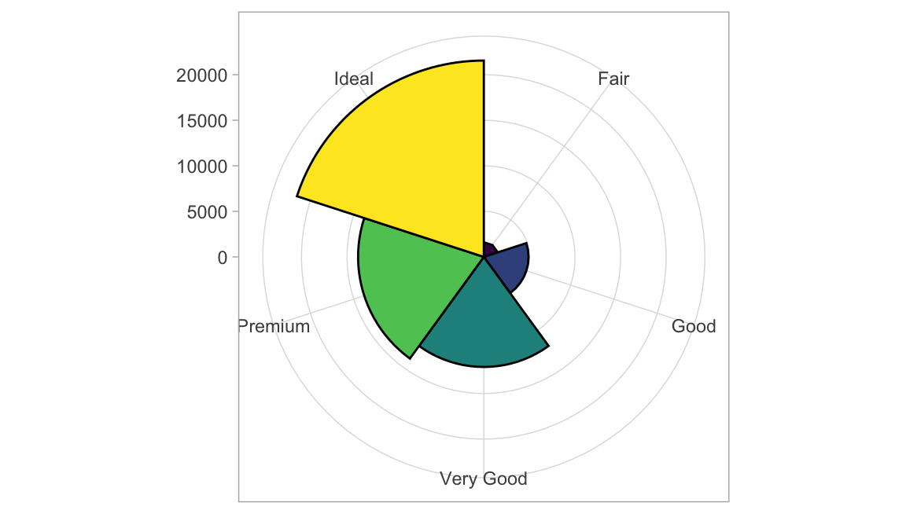

第 6 章 多重glm
品牌和价格分析

问卷
6.1 1.Multinomial Logit Model
mlogit包使用一种称为dfidx的定制数据格式，这是一种增强的数据帧，其中包含主要用于识别选择场景、消费者和替代方案的索引。 使用mlogit包中的difidx()将数据帧转换为dfidx对象。idx参数指定数据的索引。索引有两层:第一级标识选择场景，可能还有消费者，第二级标识备选方案。在这里，我们只需要通知dfidx()函数每个索引的列名和选择变量的列名。
## canon sony nikon panasonic pixels zoom video swivel wifi price choice
## 1 0 0 1 0 0 1 0 1 0 0.79 TRUE
## 2 1 0 0 0 1 1 0 1 1 2.29 FALSE
## 3 0 0 0 1 0 0 0 0 1 1.29 FALSE
## consumer alt chid
## 1 1 1 1
## 2 1 2 1
## 3 1 3 1Code
camera_idx = dfidx(
as.data.frame(camera_dt),
idx=list(c("chid", "consumer"), "alt"),#识别用户和产品类型
choice="choice",#是否购买
shape="long"
)
attribute_names = names(camera_dt[1:10])
logit_formula = as.formula(paste(
"choice",
"~",
paste(c("0", attribute_names), collapse=" + ")
))
logit = mlogit(logit_formula, camera_idx)
summary(logit)##
## Call:
## mlogit(formula = choice ~ 0 + canon + sony + nikon + panasonic +
## pixels + zoom + video + swivel + wifi + price, data = camera_idx,
## method = "nr")
##
## Frequencies of alternatives:choice
## 1 2 3 4 5
## 0.20708 0.17620 0.19484 0.16905 0.25282
##
## nr method
## 5 iterations, 0h:0m:0s
## g'(-H)^-1g = 0.0099
## successive function values within tolerance limits
##
## Coefficients :
## Estimate Std. Error z-value Pr(>|z|)
## canon 0.465026 0.075967 6.1214 9.273e-10 ***
## sony 0.238372 0.076693 3.1081 0.001883 **
## nikon 0.311653 0.076591 4.0691 4.720e-05 ***
## panasonic 0.022662 0.077852 0.2911 0.770986
## pixels 0.758258 0.042194 17.9706 < 2.2e-16 ***
## zoom 0.819351 0.041940 19.5363 < 2.2e-16 ***
## video 0.627884 0.040647 15.4472 < 2.2e-16 ***
## swivel 0.367104 0.040211 9.1294 < 2.2e-16 ***
## wifi 0.577804 0.041658 13.8703 < 2.2e-16 ***
## price -1.485549 0.032467 -45.7551 < 2.2e-16 ***
## ---
## Signif. codes: 0 '***' 0.001 '**' 0.01 '*' 0.05 '.' 0.1 ' ' 1
##
## Log-Likelihood: -6503.7## canon sony nikon panasonic pixels zoom
## 0.46502619 0.23837189 0.31165295 0.02266153 0.75825790 0.81935109
## video swivel wifi price
## 0.62788362 0.36710402 0.57780388 -1.48554945## [1] 4.932926尼康品牌溢价4.932926高于松下
6.2 2.模拟市场利润
4个品牌产品参数
Code
6.2.2 模拟利润
mc：成本
mkt_size：市场规模
p：购买概率/市场份额
Code
## [,1]
## [1,] 522.0425
## [2,] 323.8865
## [3,] 407.0074
## [4,] 328.03526.2.3 最佳价格（定价）
计算第一个产品的最佳收益价格
Code
profit<-c()#save profit
#Use cycles to calculate returns
for(i in seq(0.5,5,0.01)){
x=X
x$price[1]=i#Change the price of selcet
profit<-append(profit,get_profits(x,beta, 0.5, 1000)[1,1])#save Nikon's profits
}
# profit
price=seq(0.5,5,0.01)
ggplot(data.frame(price=seq(0.5,5,0.01),prof=profit),aes(x=price,y=prof))+
geom_line()+
geom_vline(xintercept =price[which.max(profit)],col='red')+
geom_text(aes(x=price[which.max(profit)],y=400),
label=paste0('optimal price :',price[which.max(profit)],'\n profit is ',
max(round(profit,2))),col='blue'
)
6.3 3.Mixed Logit
还没理解
Code
set.seed(123)
camera_neg_price_idx = dfidx(
as.data.frame(camera_dt),
idx=list(c("chid", "consumer"), "alt"),
choice="choice", shape="long", opposite="price")
param_dist = setNames(rep("n", length(attribute_names)), attribute_names)
param_dist["price"] = "ln"
mixed_logit = mlogit(logit_formula, camera_neg_price_idx, panel=TRUE, rpar=param_dist, R=100)
summary(mixed_logit)##
## Call:
## mlogit(formula = choice ~ 0 + canon + sony + nikon + panasonic +
## pixels + zoom + video + swivel + wifi + price, data = camera_neg_price_idx,
## rpar = param_dist, R = 100, panel = TRUE)
##
## Frequencies of alternatives:choice
## 1 2 3 4 5
## 0.20708 0.17620 0.19484 0.16905 0.25282
##
## bfgs method
## 23 iterations, 0h:0m:15s
## g'(-H)^-1g = 3.94E-07
## gradient close to zero
##
## Coefficients :
## Estimate Std. Error z-value Pr(>|z|)
## canon 1.527930 0.095301 16.0327 < 2.2e-16 ***
## sony 1.141205 0.097019 11.7626 < 2.2e-16 ***
## nikon 1.340514 0.096989 13.8213 < 2.2e-16 ***
## panasonic 0.888853 0.097645 9.1029 < 2.2e-16 ***
## pixels 1.066774 0.053763 19.8421 < 2.2e-16 ***
## zoom 1.111774 0.053764 20.6786 < 2.2e-16 ***
## video 0.875162 0.052014 16.8256 < 2.2e-16 ***
## swivel 0.454605 0.049932 9.1045 < 2.2e-16 ***
## wifi 0.809111 0.052658 15.3654 < 2.2e-16 ***
## price 0.672869 0.025572 26.3128 < 2.2e-16 ***
## sd.canon 0.329621 0.075514 4.3650 1.271e-05 ***
## sd.sony -0.656579 0.080468 -8.1595 4.441e-16 ***
## sd.nikon 0.873637 0.067190 13.0026 < 2.2e-16 ***
## sd.panasonic 0.450770 0.086979 5.1825 2.189e-07 ***
## sd.pixels 0.943119 0.059335 15.8949 < 2.2e-16 ***
## sd.zoom 0.893190 0.063600 14.0439 < 2.2e-16 ***
## sd.video 0.721498 0.058427 12.3488 < 2.2e-16 ***
## sd.swivel 0.846511 0.062320 13.5832 < 2.2e-16 ***
## sd.wifi 0.767783 0.058144 13.2049 < 2.2e-16 ***
## sd.price 0.635264 0.016947 37.4863 < 2.2e-16 ***
## ---
## Signif. codes: 0 '***' 0.001 '**' 0.01 '*' 0.05 '.' 0.1 ' ' 1
##
## Log-Likelihood: -5361
##
## random coefficients
## Min. 1st Qu. Median Mean 3rd Qu. Max.
## canon -Inf 1.3056045 1.5279305 1.5279305 1.750256 Inf
## sony -Inf 0.6983485 1.1412046 1.1412046 1.584061 Inf
## nikon -Inf 0.7512553 1.3405142 1.3405142 1.929773 Inf
## panasonic -Inf 0.5848131 0.8888532 0.8888532 1.192893 Inf
## pixels -Inf 0.4306498 1.0667736 1.0667736 1.702897 Inf
## zoom -Inf 0.5093267 1.1117742 1.1117742 1.714222 Inf
## video -Inf 0.3885192 0.8751621 0.8751621 1.361805 Inf
## swivel -Inf -0.1163584 0.4546046 0.4546046 1.025568 Inf
## wifi -Inf 0.2912494 0.8091114 0.8091114 1.326973 Inf
## price 0 1.2768422 1.9598520 2.3980336 3.008218 InfCode
Code

6.3.1 Other Choice Models
The multinomial logit model is the foundation of many other choice models that are widely used in quantitative marketing and industrial organization.
Random coefficients model, aka BLP (Berry, Levinsohn, and Pakes 1995)
Nested logit model (McFadden 1981) Bayesian hierarchical models (Rossi and Allenby 2003)